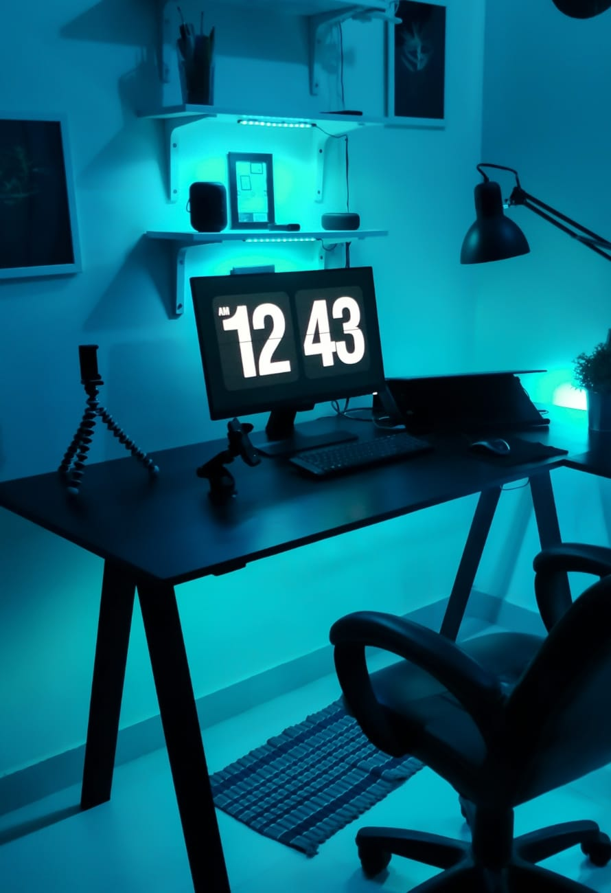

about イベントについて

テーマ
定時で帰る
残業は心と体に良くないです。世界最速で定時に帰る男、ショーン・デイビット・ジュニア氏が定時で帰るためのスペシャルな技を紹介！ さぁ、Let's go home now!
| 日時 | 2030年5月30日（土） 13:00-翌朝13:00 |
|---|---|
| 会場 | オンライン |
| 定員 | ３名 |
| 参加費 | 無料 |
speaker スピーカー
Shawn David Jr ショーン・デイビット・ジュニア
株式会社スタート代表取締役。Webデザイナー。
定時になると仕事用の脳と身体機能が停止し自動的に帰路につく男。ショーン氏のその姿は人間と言うよりもさながらアンドロイドのようである。
ショーン氏は著書『会社ではアンドロイドになれ』の中でこう語っている。
「会社における仕事において、我々は自分を機械、そうアンドロイドと思い込むべきだ。定時になれば自動で仕事用の機能は停止されるのだ。決められた時間に、設定されたタスクのみを行う、それがアンドロイドの役目だろう？そして、それは会社で働く我々人間の権利でもある」
アンドロイドのように働くべきと語るショーン氏の考え方はディストピア思想と揶揄されるが、本イベントでは氏の考え方をたっぷりと味わいたい。
定時になると仕事用の脳と身体機能が停止し自動的に帰路につく男。ショーン氏のその姿は人間と言うよりもさながらアンドロイドのようである。
ショーン氏は著書『会社ではアンドロイドになれ』の中でこう語っている。
「会社における仕事において、我々は自分を機械、そうアンドロイドと思い込むべきだ。定時になれば自動で仕事用の機能は停止されるのだ。決められた時間に、設定されたタスクのみを行う、それがアンドロイドの役目だろう？そして、それは会社で働く我々人間の権利でもある」
アンドロイドのように働くべきと語るショーン氏の考え方はディストピア思想と揶揄されるが、本イベントでは氏の考え方をたっぷりと味わいたい。
Mihoko Tennis ミホコ・テニース
会社員兼プロテニスプレイヤー。WTOランキング63,984位。
会社員をしながらプロテニスプレイヤーとしても生計を立てているミホコ氏。平日は仕事で忙しい中、一体どのようにテニスの練習時間を捻出しているのか？会社にもテニスラケットを持ち込むというミホコ氏のワーキングスタイルに迫る。
会社員をしながらプロテニスプレイヤーとしても生計を立てているミホコ氏。平日は仕事で忙しい中、一体どのようにテニスの練習時間を捻出しているのか？会社にもテニスラケットを持ち込むというミホコ氏のワーキングスタイルに迫る。
Jecica Pannacotta ジェシカ・パンナコッタ
フリーランスのエンジニア。
「絶対に自宅でフルリモートで働く」という徹底したモットーに基づき、約7年間外出をしていない。インターネットを信仰しており、リアルやオフラインよりもオンラインを最重要視するライフスタイルを実践している。「外に出たら負け」が口グセのジェシカ氏の『超ネット仕事術』は必聴。
「絶対に自宅でフルリモートで働く」という徹底したモットーに基づき、約7年間外出をしていない。インターネットを信仰しており、リアルやオフラインよりもオンラインを最重要視するライフスタイルを実践している。「外に出たら負け」が口グセのジェシカ氏の『超ネット仕事術』は必聴。
session セッション
| 13:00-14:00 |
ライトニングトーク：定時に帰る、それはアンドロイドになることスピーカー：ショーン・デイビット・ジュニア |
|---|---|
| 14:00-18:00 |
ショーンのとっておきの定時に帰る方法スピーカー：ショーン・デイビット・ジュニア |
| 18:00-24:00 |
公私混同仕事術スピーカー：ミホコ・テニース |
| 24:00-13:00 |
超ネット仕事術スピーカー：ジェシカ・パンナコッタ |